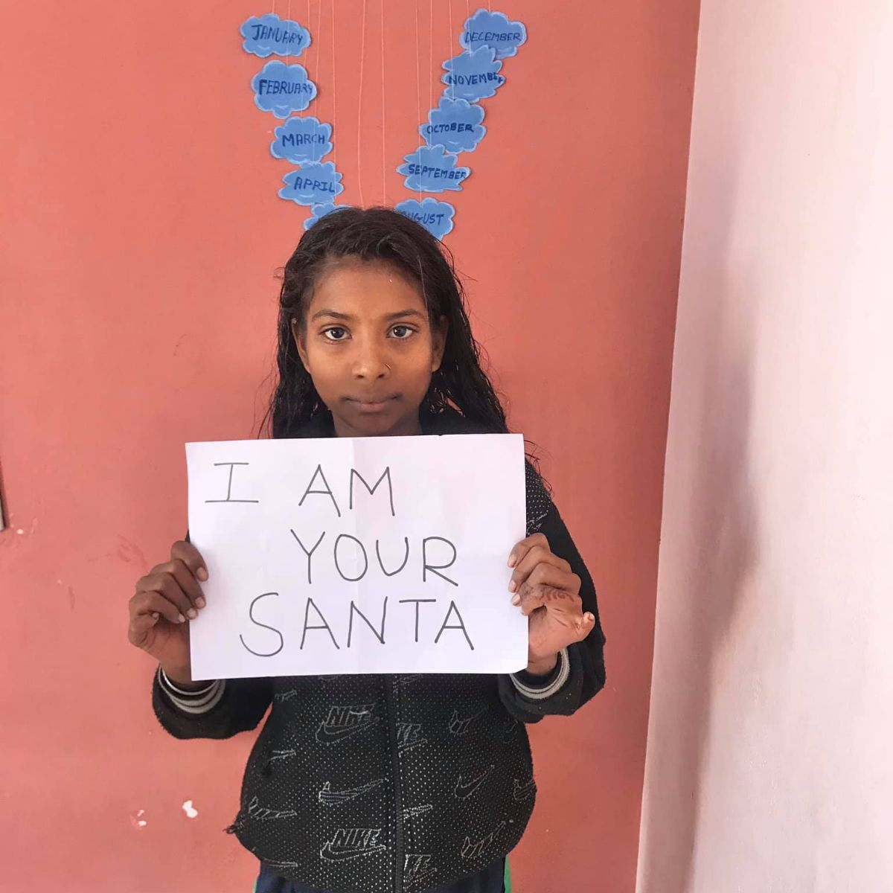

<!DOCTYPE html>
<html>
<head>           
    <meta charset='utf-8'>
    <meta http-equiv='X-UA-Compatible' content='IE=edge'>
    <title>Shashi Dream Foundation</title>
    <meta name='viewport' content='width=device-width, initial-scale=1'>
    <link rel='stylesheet' type='text/css' href='./CSS/styles.css'>
    <!-- Bootstrap CSS -->
    <link rel="stylesheet" href="node_modules/bootstrap/dist/css/bootstrap.min.css">
    <link rel="stylesheet" href="node_modules/font-awesome/css/font-awesome.css">
     <link rel="stylesheet" href="node_modules/bootstrap-social/bootstrap-social.css">
     <link rel="stylesheet" href="gallery.css">
</head>

<body>
    <nav class="navbar navbar-dark navbar-expand-sm  fixed-top">
        <div class="container">
            <button class="navbar-toggler" type="button" data-toggle="collapse" data-target="#Navbar">
               <span class="navbar-toggler-icon"></span>
            </button>
            <a class="navbar-brand" href="./index.html"></a>
            <div class="collapse navbar-collapse" id="Navbar">
             <ul class="navbar-nav mr-auto">
                <li class="nav-item active"><a class="nav-link" href="./index.html">Home</a></li>
                <li class="nav-item"><a class="nav-link" href="/aboutus.html">About</a></li>
                <li class="nav-item"><a class="nav-link" href="./Gallery.html">Gallery</a></li>
                <li class="nav-item"><a class="nav-link" href="./Members.html">Members</a></li>


                <li class="nav-item dropdown">
                    <a class="nav-link dropdown-toggle" href="#" id="navbarDropdown" role="button" data-toggle="dropdown" aria-haspopup="true" aria-expanded="false">
                      Menu
                    </a>
                    <div class="dropdown-menu" aria-labelledby="navbarDropdown">
                      <a class="dropdown-item" href="#">Events</a>
                      <a class="dropdown-item" href="newspaper.html">NewsPaper Articles</a>
                      <div class="dropdown-divider"></div>
                      <a class="dropdown-item" href="#">Awards</a>
                    </div>
                  </li>                
                   <li class="nav-item"><a class="nav-link" href="./contactus.html">Contact </a></li>   
                   <li class="nav-item"><a class="nav-link" href="#">Join Us</a></li>
                   <li class="nav-item"><a class="nav-link" href="donate.html">Donate</a></li>

                </span>
            </ul>

            </div>
        </div>
    </nav>
    <header class="jumbotron" >
        <div class="container">
            <div class="row row-header">
                <div class="col-3 col-sm-2">
                    
                </div>
                   <div class="col-9 col-sm-6">
                        <h1>Shashi Dream Foundation</h1>
                        <p>Empowering Generation Next...</p>
               </div>
            </div>
        </div> 
    </header>
  
 <div class="container">
     <div class="row row-content">
    <div class="col-12">
        <div class="card">
            <h3 class="card-header bg-primary text-white">1.Stationary distribution drive</h3>
            <div class="card-body">
                <p>
                    We all know how important wriing is. It gives you your world of
                    freedom. You can shape any world any sentence the way you want.
                    Using Sketches, pencils, etc you can draw the world enumeraing
                    your creaivity. But What do you think, do underprivileged children
                    feel this freedom?<br>SDF team iniiated the mission to distribute staionery to these
                    children. It will add wings to their thoughts. First, SDF distributed
                    staionery to children who come to Shashi Pathshala. The programme
                    went well and impressed by this; nearby schools also approached the
                    SDF team to distribute staionery items in their school. The first
                    event held at Z P School on 1 July 2019. Here, surprisingly the raio
                    of students was very less, despite having good infrastructure. School
                    authoriies told these little kid’s families usually do small scale work
                    like daily wage working, farming. They hardly manage to aford
                    ameniies for their children. Therefore, most of them even prefer
                    not to send them to school. The programme was attended by the
                    Headmaster of school, who himself is a social acivist. He appreciated
                    the SDF team’s work. Consequently, we reached other schools also to
                    contribute our part to their educaion.</p>   
                    <div class="col-12">
                        <div class="card card-body bg-light">
                            <blockquote class="blockquote">
                                <p class="mb-0">If you want to change the world, pick up your pen and write</p>
                                <footer class="blockquote-footer">Martin Luther.
                                </footer>
                            </blockquote>
                        </div>
                    </div> 
            </div>
        </div>
    </div>
    <div class="col-12">
        <div class="card">
            <h3 class="card-header bg-primary text-white">2.Books distribution drive</h3>
            <div class="card-body">
                <p>
                    On 25 Dec 2018, the SDF team packed their bags and headed to the
                    village Belona which is in a district of Nagpur. When they reached
                    the desinaion and opened their magical bags, the crowd of little
                    naïve children gathered around. When they showed them the books
                    with colorful pictures and texts, their hearts delighted. And you
                    should see the smile on their little faces ater receiving them as gits.
                    Those smiles were impeccable. This small step was appreciated by
                    the village people also.<br>SDF team will look forward to such events to bring a smile on
                    these little faces.</p>   
                    <div class="col-12">
                        <div class="card card-body bg-light">
                            <blockquote class="blockquote">
                                <p class="mb-0">There is no friend as loyal as a book</p>
                                <footer class="blockquote-footer">Ernest Hemingwayt.
                                </footer>
                            </blockquote>
                        </div>
                    </div> 
            </div>
        </div>
    </div>
    <div class="col-12">
        <div class="card">
            <h3 class="card-header bg-primary text-white">3.Women's day along with sanitation drive</h3>
            <div class="card-body">
                <p>
                    Shashi Dream Foundaion conducted a sanitaion drive in
                    which 89 girls andwomen were given sanitary napkins,<br><br>The SDF team also conducted an informaive session and
                    educated theaudience about women's health and sanitaion
                    pracices. The moive behindthe event was to raise awareness
                    about women's issues and educate themabout essenial
                    sanitaion pracices. The SDF team organized every aspect
                    of the event seamlessly and with great enthusiasm.<br><br>The event was highlighted in prominent regional newspapers
                    like Sakal Times and Lokshai Warta.</p>   
                    <div class="col-12">
                        <div class="card card-body bg-light">
                            <blockquote class="blockquote">
                                <p class="mb-0">There is no friend as loyal as a book</p>
                                <footer class="blockquote-footer">Ernest Hemingwayt.
                                </footer>
                            </blockquote>
                        </div>
                    </div> 
            </div>
        </div>
    </div>
    <div class="card">
        <h3 class="card-header bg-primary text-white">4.Grocery distribution drive drive</h3>
        <div class="card-body">
            <p>
                While the world struggling with the worst pandemic of the century,
                there is a secion of society who is facing one more calamity i.e.
                hunger. The world is under lockdown, no work is taking place, no
                livelihood can be earned. People like you and me can aford this
                lockdown as we get salaries and we do have enough stock of food
                which can sustain us for months. But for people whose hearth lit
                only when he earns money for that day. For how many days will they
                sleep empty stomach? Sill, they can but it will be a heart-wrenching
                situaion for them to see their kids with no food for days. For them,
                this lockdown situaion is not less than hell, where they will starve to
                death. For them, COVID-19 is not scarier but hunger is. By realizing the
                need of the hour, the govt. India is taking iniiaives to take care of
                their food and money. But will the govt. be able to sustain these
                people (22% populaion of India) along with dealing emergency of
                COVID-19? Here, the naion needs us, these people require our help.<br><br>This ime also, with no surprise SDF team came forward to take the
                responsibility. As this task require way more eforts and funds, SDF
                collaborated with Miti Ke Rang NGO to cover this drive-in Katol.
                The aim was to transfer money to their accounts and help them with
                daily food necessiies. SDF reached 1000 families, who were daily
                wage workers, maids, labourers, vendors, construcion workers,
                etc. Their livelihood was earned on a daily earning basis. SDF team
                arranged a fund for groceries like rice, sugar, etc. for these people.
                The team with abiding guidelines of WHO and govt., wearing face
                masks, and hand saniized packed their bags to reach these people
                as Lifesavers. Successfully, On 4th April 2020, the team was able to
                accomplish its mission. They distributed the groceries to the families
                which can help them to sustain for about 21 days. SDF team also
                make them aware of the situaion of the country and ask them to
                not risk their lives. SDF team will be always available whenever
                they require any help. SDF team also ask them to take precauionary
                measure to fight against this pandemic and in any health emergency,
                they must seek medical help.</p>   
                
        </div>
    </div>
</div>


</div>
 </div>
<br>

<div class="container-fluid" id="events">
<h2>Major Projects of <strong>SDF</strong>
</h2>
<div class="row row-content">
   
        <ul class="nav nav-tabs">
            <li class="nav-item">
              <a class="nav-link active" href="#g1"
                role="tab" data-toggle="tab">GK Exam</a>
            </li>
            <li class="nav-item">
              <a class="nav-link" href="#g2" role="tab"
                data-toggle="tab">Program Participants</a>
            </li>
        </ul>

        <div class="tab-content">
            <div role="tabpanel" class="tab-pane fade show active" id="g1">  
                <div class="col-12">
                    <div class="card">
                        <h3 class="card-header">About the Exam</h3>
                        <div class="card-body">
                            <p>
                                To make an efort in the direcion to help children grow, the
                                Shashi Dream Foundaion team came up with an idea to
                                organize quiz in diferent schools and at a diferent level.
                                The moive of the team behind organizing quiz was to make
                                this young generaion realize the importance of textbooks they
                                are studying. These books are not just a compilaion of paper
                                rather they are an elixir for their bright future.<br><br>Now the quesion in front of them was where to organize?
                                They chose three schools which do not come under the City
                                Council. The schools were Keshav Rao Pawar School,
                                Government School, and Katol High School. The SDF team
                                met school authoriies and proposed their idea to organize a
                                quiz with the help of their team and everything from quiz paper
                                to pen will be arranged by SDF only. And school authoriies gave
                                a posiive response to the proposal.</p>   
                                <div class="col-12">
                                    <div class="card card-body bg-light">
                                        <blockquote class="blockquote">
                                            <p class="mb-0">“All children are born to grow, to develop, to live, to love, and
                                                to ariculate their needs and feelings for their self-protecion</p>
                                            <footer class="blockquote-footer">Alice Miller.
                                            </footer>
                                        </blockquote>
                                    </div>
                                </div> 
                        </div>
                    </div>
                </div>
            </div>
          
            <div role="tabpanel" class="tab-pane fade" id="g2">  
                <div class="col-12">
                    <div class="card">
                        <h3 class="card-header">Program Participants</h3>
                        <div class="card-body">
                            <p>
                                SDF is blessed with diversified people. Children are from
                                various backgrounds, some children’s parents are farmers,
                                some are workers, some are servants and all this helps us
                                to know the problems of the diferent secions of society and
                                how to deal with it.<br><br>In the SDF volunteering team, people are from engineering,
                                arts, social science, management, and medical backgrounds
                                which help to make the team of SDF stronger. For any
                                problem, we get a soluion and view from diferent angles.
                                Timely discussions and feedbacks from this team help a lot
                                in gearing up the growth of SDF. Here, it will be unforgivable
                                to not remember SDF’s major diversified fund giver these
                                people are IITians, some are in IIScians, some from the
                                management area our young generaion who believes in
                                SDF and its work.</p>   
                        </div>
                    </div>
                </div>
            </div>


        </div>

    

</div>


 </div>


    <footer class="footer">
        <div class="container">
            <div class="row">             
                <!-- <div  class="col-4 offset-1 col-sm-2 ">
                    <h5>Links</h5>
                    <ul class="list-unstyled">
                        <li><a href="./index.html">Home</a></li>
                        <li><a href="/aboutus.html.html">About</a></li>
                        <li><a href="#">Menu</a></li>
                        <li><a href="./contactus.html">Contact</a></li>
                        
                    </ul>
                </div> -->
                <div class="col-7 col-sm-5">
                    <h5>Our Address</h5>
                    <address>
                      Plot No 41, MHADA Colony,<br>
		              Panchwati, Katol,<br>
		              Maharashtra 441302<br>
		              <i class="fa fa-phone fa-lg"></i>:+91 84007 48412<br>
		              <i class="fa fa-fax fa-lg"></i>: +91 84007 48412<br>
		              <i class="fa fa-envelope fa-lg"></i>: <a href="mailto:shashidreamfoundation@gmail.com">shashidreamfoundation@gmail.com</a>
		           </address>
                </div>
                <div class="col-12 col-sm-4 align-self-end">
                    <div class="text-center ">
                        <a class="btn btn-social-icon btn-google" href="http://google.com/+"><i class="fa fa-google-plus fa-lg"></i></a>
                        <a class="btn btn-social-icon btn-facebook" href="https://www.facebook.com/ShashiDream"><i class="fa fa-facebook fa-lg"></i></a>
                        <a class="btn btn-social-icon btn-linkedin" href="https://www.linkedin.com/in/shashi-dream-foundation/"><i class="fa fa-linkedin fa-lg"></i></a>
                        <a class="btn btn-social-icon btn-twitter" href="http://twitter.com/"><i class="fa fa-twitter fa-lg"></i></a>
                        <a class="btn btn-social-icon btn-youtube"href="https://www.youtube.com/results?search_query=shashi+dream+foundation"><i class="fa fa-youtube fa-lg"></i></a>
                        <a class="btn btn-social-icon btn-gmail"href="mailto:shashidreamfoundation@gmail.com"><i class="fa fa-envelope-o fa-lg"></i></a>
                    </div>
                </div>
           </div>
           <div class="row justify-content-start">             
                <div class="auto">
                    <p>© Copyright 2020 Shashi Dream Foundation</p>
                </div>
           </div>
        </div>
    </footer>


</body>

<script src="node_modules/jquery/dist/jquery.slim.min.js"></script>
<script src="node_modules/popper.js/dist/umd/popper.min.js"></script>
<script src="node_modules/bootstrap/dist/js/bootstrap.min.js"></script>
</html>